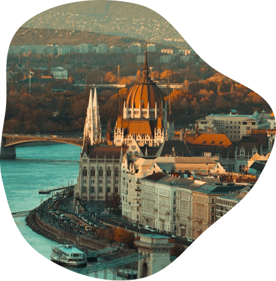
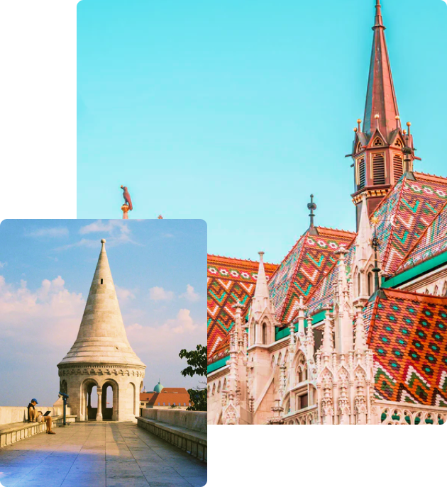

WELCOME
TO BUDAPEST
Budapest has something for everyone – from dramatic history and flamboyant architecture to healing thermal waters and a nightlife that is unrivalled in Eastern and Central Europe.
Read more

6 REASONS TO VISIT BUDAPEST
Hungarian Parliament Building
Szechenyi termal baths
Fisherman castle
Liberty bridge
Vajdahunyad Castle
Gellert Hill
Fisherman's
Bastion
The Halászbástya Hungarian or Fisherman's Bastion is one of the best known monuments in Budapest, located in the Buda Castle, in the 1st district of Budapest.
